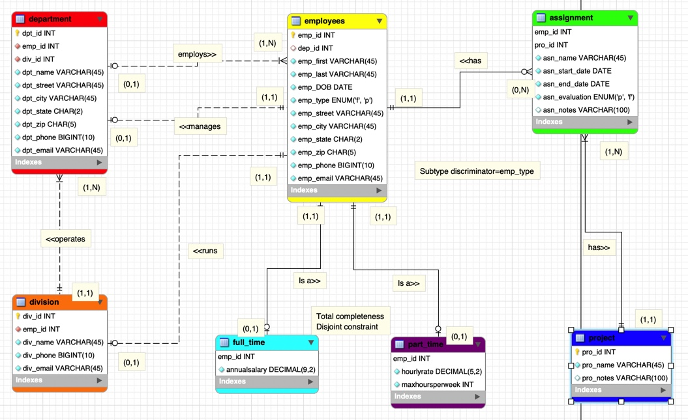

Using Structured Query Language (SQL)

As the creator and project director I put together a functional database with an accompanying schema. In this schema you can see the relationships between employees and the departments they manage, which employees are full time and part time, the divisions each employee runs, and the assignments each employee is in charge of.
This project helped me develop my knowledge in database theory and how to use the SQL programming language to create useable results. The main challenges of this projects were having to connect multiple different data types from scratch. After overcoming these challenges I can now add, delete, update, and edit data from the database using Structured Query Language.